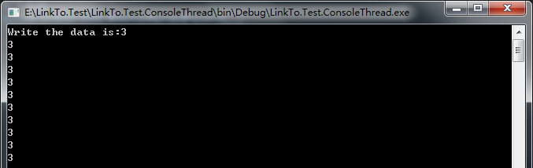

本笔记摘抄自：https://www.cnblogs.com/zhili/archive/2012/07/21/ThreadsSynchronous.html，记录一下学习过程以备后续查用。
一、线程同步概述
创建多线程来实现让我们能够更好地响应应用程序，然而当我们创建了多个线程时，就存在多个线程同时访问一个共享资源的情况。此时，我们就需要用到线程同步。线程同
步可以防止数据（共享资源）的损坏。
一般来说，设计应用程序应尽量避免使用线程同步， 因为线程同步会产生一些问题：
1.1、它的使用比较繁琐。我们需要用额外的代码，把多个线程同时访问的数据包围起来，并获取和释放一个线程同步锁。如果有一个代码块忘记获取锁，就有可能造成数据损坏。
1.2、使用线程同步会影响性能。
1.2.1、获取和释放一个锁是需要时间的，我们在决定哪个线程先获取锁的时候，CPU要进行协调，这些额外的工作就会对性能造成影响。
1.2.2、线程同步一次只允许一个线程访问资源，这样就会阻塞线程，而阻塞线程会造成更多的线程被创建。这样CPU就有可能要调度更多的线程，从而对性能造成影响。
二、线程同步使用
2.1 使用锁对性能的影响
1.2.1描述过使用锁会对性能产生影响，下面通过比较使用锁和不使用锁消耗的时间来说明这点：
class Program
{
static void Main(string[] args)
{
#region 线程同步：使用与不使用锁的耗时对比
int x = 0;
//迭代500万次
const int iterationNumber = 5000000;
//不使用锁
Stopwatch sw = Stopwatch.StartNew();
for (int i = 0; i < iterationNumber; i++)
{
x++;
}
Console.WriteLine("Total time consuming is:{0}ms.", sw.ElapsedMilliseconds);
sw.Restart();
//使用锁
for (int i = 0; i < iterationNumber; i++)
{
Interlocked.Increment(ref x);
}
Console.WriteLine("Total time consuming is:{0}ms.", sw.ElapsedMilliseconds);
Console.Read();
#endregion
}
}运行结果如下：
2.2 Interlocked实现线程同步
Interlocked为多个线程共享变量提供了原子操作，当我们在多线程中对一个整数进行递增操作时，就需要实现线程同步。
下面代码演示加锁与不加锁的区别：
不加锁：
class Program
{
//共享资源
public static int number = 0;
static void Main(string[] args)
{
#region 线程同步：使用Interlocked实现线程同步
//不加锁
for (int i = 0; i < 10; i++)
{
Thread thread = new Thread(Add);
thread.Start();
}
Console.Read();
#endregion
}
/// <summary>
/// 递增不加锁
/// </summary>
public static void Add()
{
Thread.Sleep(1000);
Console.WriteLine("The current value of number is:{0}", ++number);
}
}运行结果如下：
结果与预期可能不太一样。为了解决这样的问题，我们可以通过使用 Interlocked.Increment方法来实现自增操作。
实现原理：类似银行叫号，当有空号且号码是自己的，才能去办理相关的业务，否则继续等待。
加锁：
class Program
{
//共享资源
public static int number = 0;
public static long signal = 0;
static void Main(string[] args)
{
#region 线程同步：使用Interlocked实现线程同步
//加锁
for (int i = 0; i < 10; i++)
{
Thread thread = new Thread(new ParameterizedThreadStart(AddWithInterlocked));
thread.Start(i);
}
Console.Read();
#endregion
}
/// <summary>
/// 递增加Interlocked锁
/// </summary>
public static void AddWithInterlocked(object parameter)
{
while (Interlocked.Read(ref signal) != 0 || (int)parameter != number)
{
Thread.Sleep(100);
}
Interlocked.Increment(ref signal);
Console.WriteLine("The current value of number is:{0}", ++number);
Interlocked.Decrement(ref signal);
}
}运行结果如下：
2.3 Monitor实现线程同步
对于上面那个情况，也可以通过Monitor.Enter和Monitor.Exit方法来实现线程同步。
C#中通过lock关键字来提供简化的语法(lock可以理解为Monitor.Enter和Monitor.Exit方法的语法糖)。
class Program
{
//共享资源
public static int number = 0;
private static readonly object addLock = new object();
static void Main(string[] args)
{
#region 线程同步：使用Monitor实现线程同步
//非语法糖
for (int i = 0; i < 10; i++)
{
Thread thread = new Thread(AddWithMonitor);
thread.Start();
}
Console.Read();
//语法糖
//for (int i = 0; i < 10; i++)
//{
// Thread thread = new Thread(AddWithLock);
// thread.Start();
//}
//Console.Read();
#endregion
}
/// <summary>
/// 递增加Monitor锁
/// </summary>
public static void AddWithMonitor()
{
Thread.Sleep(100);
Monitor.Enter(addLock);
Console.WriteLine("The current value of number is:{0}", ++number);
Monitor.Exit(addLock);
}
/// <summary>
/// 递增加Lock锁
/// </summary>
public static void AddWithLock()
{
Thread.Sleep(100);
lock (addLock)
{
Console.WriteLine("The current value of number is:{0}", ++number);
}
}
}运行结果如下：
接上面的addLock锁(以下描述为obj锁)，顺便学习一下Monitor类的原理：
Monitor在锁对象obj上会维持两个线程队列R和W以及一个引用T ：
(1)T是对当前获得了obj锁的线程的引用。
(2) R为就绪队列。
R队列上的线程，是已经准备好了去竞争获取obj锁的线程。
线程可通过调用Monitor.Enter(obj)或Monitor.TryEnter(obj)而直接进入R队列，可通过调用Monitor.Exit(obj)或Monitor.Wait(obj)释放其所获得的obj锁。
当obj锁被某个线程释放后，这个队列上的线程就会去竞争obj锁，而获得obj锁的线程将被T引用。
(3) W为等待队列。
W队列上的线程，是不会被OS直接调度执行的线程。也就是说，等待队列上的线程不能去获得obj锁。
线程可通过调用Monitor.Wait(obj)而直接进入W队列，可通过调用Monitor.Pulse(obj)或Monitor.PulseAll(obj)将W队列中的第一个等待线程或所有等待线程移至R队列，
这时被移至R队列的这些线程就有机会被OS直接调度执行，也就是可以去竞争obj锁。
(4)Monitor的成员方法。
Monitor.Enter(obj)/Monitor.TryEnter(obj) ：线程会进入R队列以等待获取obj锁
Monitor.Exit(obj) ：线程释放obj锁（只有获取了obj锁的线程才能执行Monitor.Exit(obj)）
Monitor.Wait(obj)： 线程释放当前获得的obj锁，然后进入W队列并阻塞。
Monitor.Pulse(obj) ：将W队列中的第一个等待线程移至R队列中以使第一个线程有机会获取obj锁。
Monitor.PulseAll(obj)：将W队列中的所有等待线程移至R队列以使得这些线程有机会获得obj锁。
下面代码演示Monitor.Wait及Monitor.Pulse的使用：
class Program
{
//共享资源
private static readonly object addLock = new object();
static void Main(string[] args)
{
#region 线程同步：Monitor.Wait与Monitor.Pulse的使用
for (int i = 0; i < 10; i++)
{
Thread thread = new Thread(MonitorWaitAndPulse);
thread.Start();
}
Console.Read();
#endregion
}
/// <summary>
/// Monitor中的Wait与Pulse方法
/// </summary>
public static void MonitorWaitAndPulse()
{
//进入就绪队列等待获取锁资源
Monitor.Enter(addLock);
//进来打声招呼
Console.WriteLine("{0}：我来了，临时要出去办一下事。", Thread.CurrentThread.ManagedThreadId);
//唤醒等待队列中的第一个线程进入就绪队列
Monitor.Pulse(addLock);
//暂时释放锁资源进入等待队列
Monitor.Wait(addLock);
//出去办事
Thread.Sleep(1000);
//回来打声招呼
Console.WriteLine("{0}：我回来了。", Thread.CurrentThread.ManagedThreadId);
//释放锁资源
Monitor.Exit(addLock);
}
}运行结果如下：
2.4 ReaderWriterLock实现线程同步
如果我们需要对一个共享资源执行多次读取时，用前面所讲的类实现的同步锁都仅允许一个线程进行访问，而其它线程将被阻塞。由于只是进行读取操作，其实是没有必要
堵塞其他的线程， 应该让它们并发的执行。
此时，可通过ReaderWriterLock类来实现并行读取。
class Program
{
//创建对象
public static List<int> lists = new List<int>();
public static ReaderWriterLock readerWriteLock = new ReaderWriterLock();
static void Main(string[] args)
{
#region 线程同步：使用ReaderWriterLock实现线程同步
//创建一个线程读取数据
Thread threadWrite = new Thread(Write);
threadWrite.Start();
//创建10个线程读取数据
for (int i = 0; i < 10; i++)
{
Thread threadRead = new Thread(Read);
threadRead.Start();
}
Console.Read();
#endregion
}
/// <summary>
/// 写入方法
/// </summary>
public static void Write()
{
//获取写入锁，以10毫秒为超时。
readerWriteLock.AcquireWriterLock(10);
Random ran = new Random();
int count = ran.Next(1, 10);
lists.Add(count);
Console.WriteLine("Write the data is:" + count);
//释放写入锁
readerWriteLock.ReleaseWriterLock();
}
/// <summary>
/// 读取方法
/// </summary>
public static void Read()
{
Thread.Sleep(100);
//获取读取锁
readerWriteLock.AcquireReaderLock(10);
foreach (int list in lists)
{
//输出读取的数据
Console.WriteLine(list);
}
// 释放读取锁
readerWriteLock.ReleaseReaderLock();
}
}运行结果如下：
